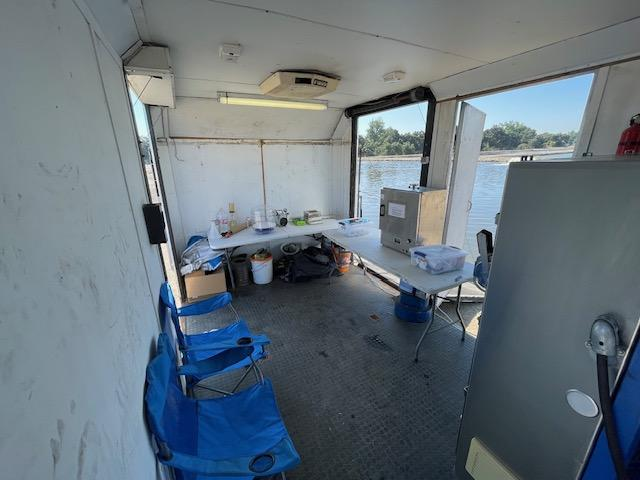

Microscreens, also called Rotating Belt Filters
A microscreen is a continuous fine-screen filtration device that removes suspended solids and cellulosic fibers from raw wastewater. Scientific papers often call the same equipment a Rotating Belt Filter, or RBF.

Portable microscreen / demonstration unit photo.
Why it works
Toilet paper and washing-machine lint contain fibers that are much larger than bacteria-sized particles. The belt captures fibrous solids while allowing much of the water and smaller particles to pass through. Belt speed can also control mat buildup and capture of finer particles.
Two functions in one system
| Function | Purpose |
|---|---|
| Belt filtration | Captures fibrous solids from the incoming wastewater stream. |
| Integral auger / screw press | Mechanically removes water so the recovered solids are much drier than conventional back-end sludge. |
Recovering solids is only part of the story. The next challenge is removing water as efficiently as possible.